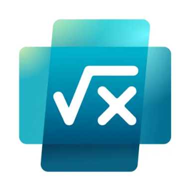
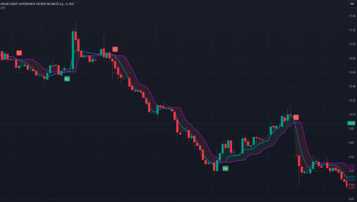
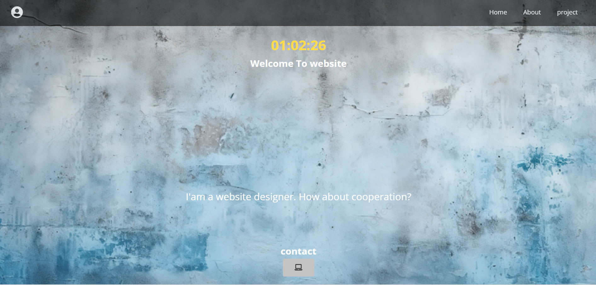

Matematik oyunu
Bu proje, matematiği eğlenceli ve öğretici bir şekilde öğrenmek için tasarlanmış interaktif bir oyun platformudur. Oyunculara farklı zorluk seviyelerinde problem çözme, mantık yürütme ve hız gerektiren görevler sunar.
Trade Robotu
Türk hisse senedi piyasasına özgü metrikler ve Google arama trendleri gibi yenilikçi veriler kullanarak yatırım kararlarını destekleyen bir al-sat robotu geliştirmeyi hedefler.
Web Sitesi
Bu proje, kişisel ve profesyonel çalışmalarınızı sergilemek için modern bir platform oluşturmayı amaçlıyor. Ziyaretçilere projelerimizi, yeteneklerimizi ve ilgi alanlarımızı etkileyici bir tasarımla sunarken, kullanıcı dostu bir deneyim sağlamayı hedefliyor.